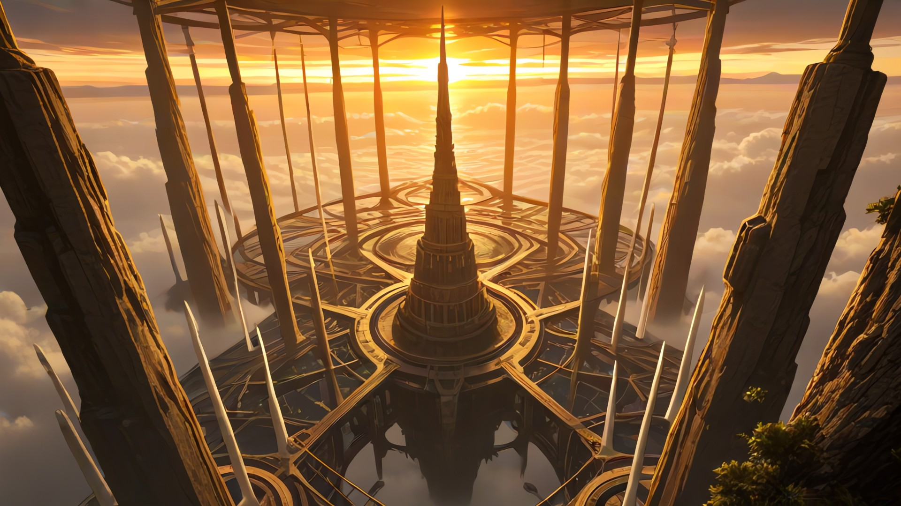
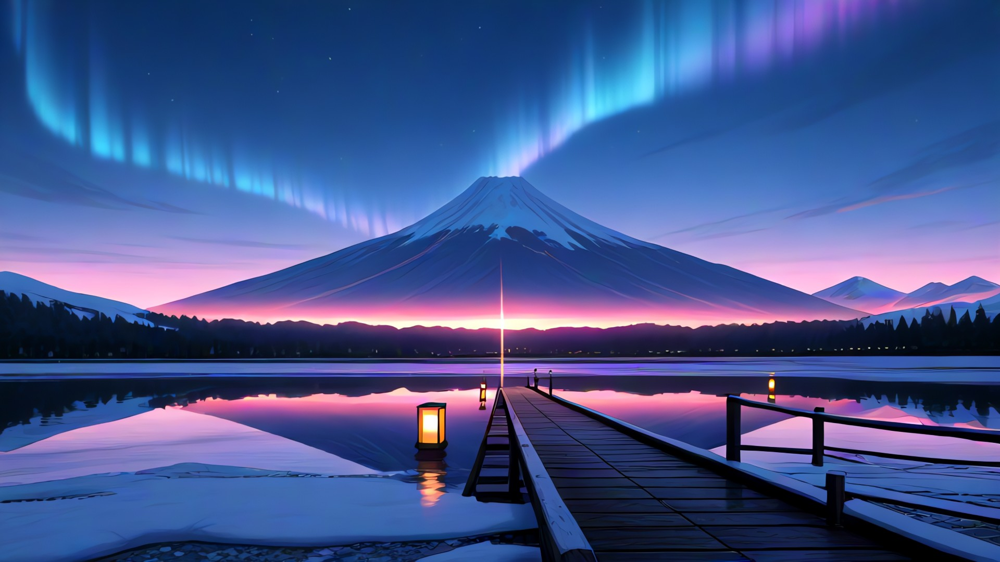
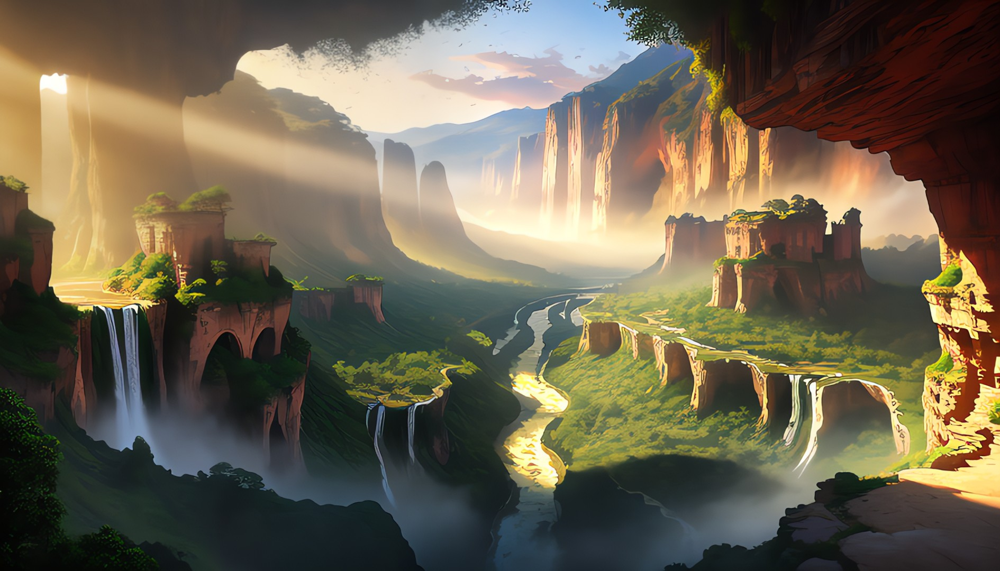
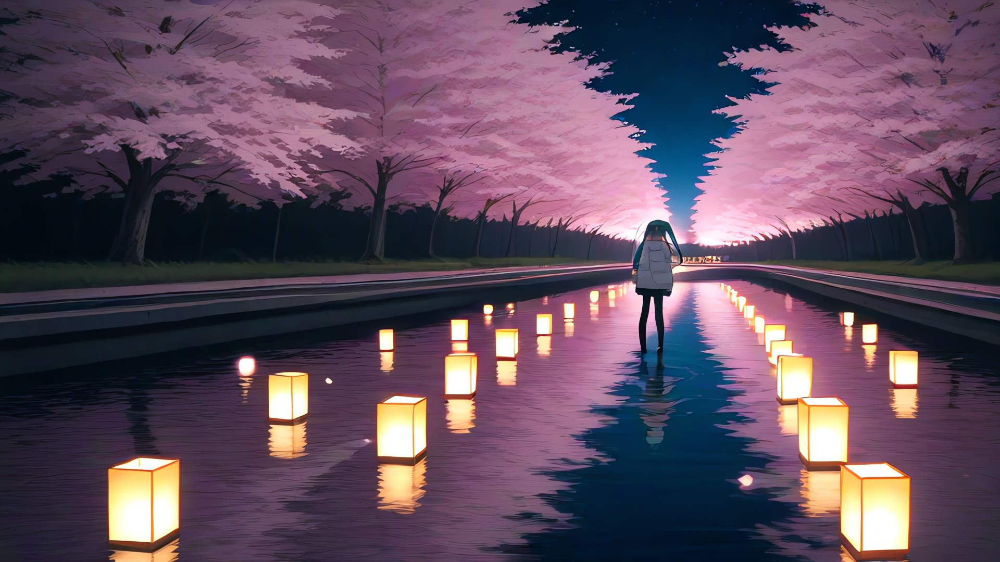
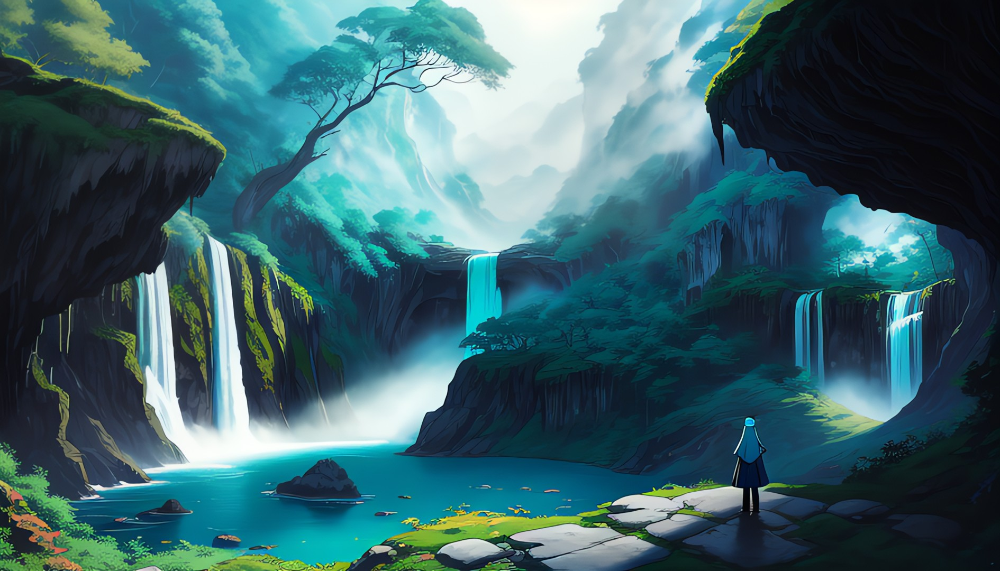
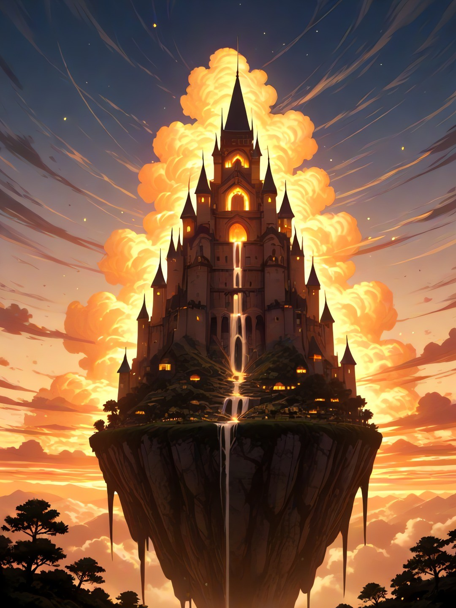
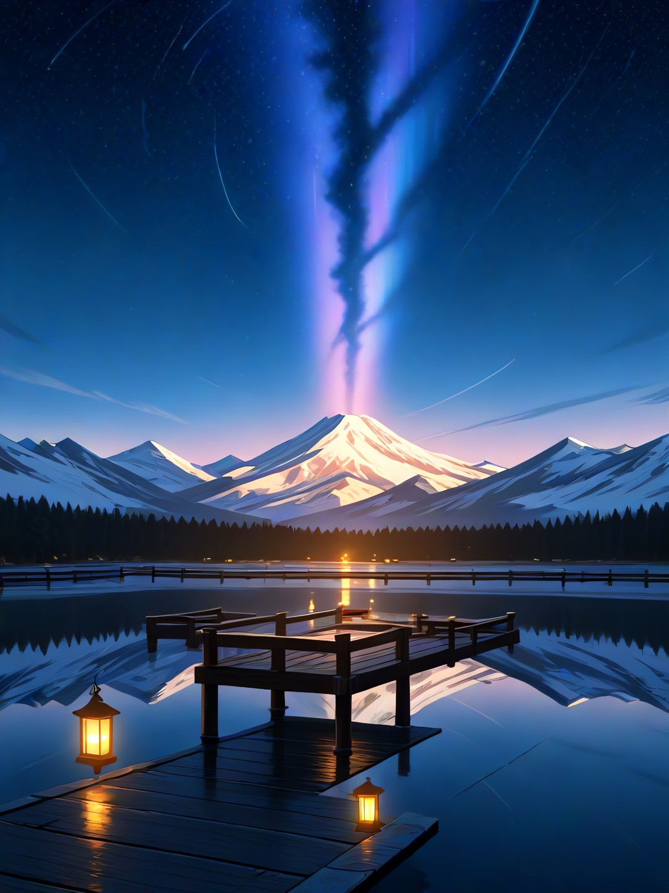
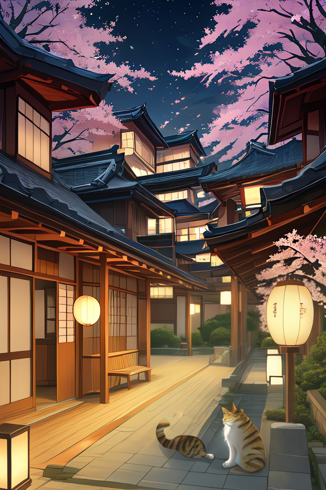
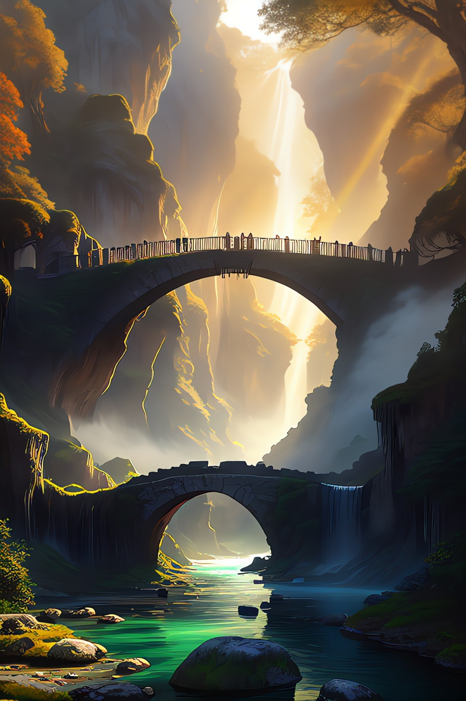

All 5 Curated Hugging Face Models · 1080p & 16:9 Full HD · Real-ESRGAN Anime v3
Scenic & Widescreen Gallery
From Makoto Shinkai aurora skies to Studio Ghibli coastlines and DreamShaper fantasy canyons — every landscape below was generated and AI-upscaled to 1080p Full HD directly on a PS4 Pro GPU in Quiet or Silent mode.
16:9 Full HD Widescreen Wallpapers (1920×1080)
Generated at native 16:9 (`1024×576` on SDXL, `896×512` on SD 1.5) and upscaled on the PS4 GPU with Real-ESRGAN Anime v3. Click any wallpaper to view full size.





Curated Models — 1080p Scenic Comparison
Every model in the DJTomato/ps4-diffusion-models catalog brings a distinct artistic personality to environments and backgrounds:




Recorded Scenic & 16:9 Benchmarks (PS4 Pro Neo)
| Scene / Model | Arch | Gen → Output | Steps / CFG / Sampler | Power Mode | UNet GPU | TFLOPS | VAE | 1080p Upscale | Rest | Total Time |
|---|---|---|---|---|---|---|---|---|---|---|
| MeinaMix V11 8-Step (Twilight Station) | SD 1.5 | 512×768 → 1080×1620 | 8 · CFG 3.5 · Euler | Quiet (20 CU) | 22.74s | 0.91 TF | 11.02s | 8.19s | 5.72s | 46.46s |
| WAI-Illustrious v14 DMD2 (16:9 Sakura Canal) | SDXL | 1024×576 → 1920×1080 | 6 · CFG 1.0 · LCM | Quiet (20 CU) | 19.56s | 1.12 TF | 14.37s | 12.04s | 9.12s | 50.99s |
| WAI-Illustrious v17 DMD2 (16:9 Sky Sanctuary) | SDXL | 1024×576 → 1920×1080 | 6 · CFG 1.0 · LCM | Quiet (20 CU) | 19.56s | 1.12 TF | 14.37s | 12.19s | 9.12s | 51.16s |
| WAI-Illustrious v14 DMD2 (Aurora Lake Portrait) | SDXL | 768×1024 → 1080×1440 | 6 · CFG 1.0 · LCM | Quiet (20 CU) | 26.59s | 1.11 TF | 19.15s | 16.84s | 10.96s | 67.59s |
| WAI-Illustrious v14 DMD2 (16:9 Aurora Peak) | SDXL | 1024×576 → 1920×1080 | 6 · CFG 1.0 · LCM | Silent (14 CU) | 31.30s | 0.70 TF | 21.64s | 14.28s | 11.40s | 73.38s |
| DreamShaper 8 (Emerald Canyon Bridges) | SD 1.5 | 512×768 → 1080×1620 | 20 · CFG 7.0 · Euler a | Quiet (20 CU) | 56.84s | 0.91 TF | 11.02s | 8.19s | 11.48s | 87.19s |
| WAI-Illustrious v17 DMD2 (Sunset Castle) | SDXL | 768×1024 → 1080×1440 | 6 · CFG 1.0 · LCM | Silent gen + Quiet up | 50.05s | 0.59 TF | 28.85s | 14.72s | 7.40s | 100.13s |
| DreamShaper 8 (16:9 Sunbeam Canyon) | SD 1.5 | 896×512 → 1890×1080 | 20 · CFG 7.0 · Euler a | Quiet (20 CU) | 70.86s | 0.88 TF | 13.77s | 9.36s | 11.80s | 105.04s |